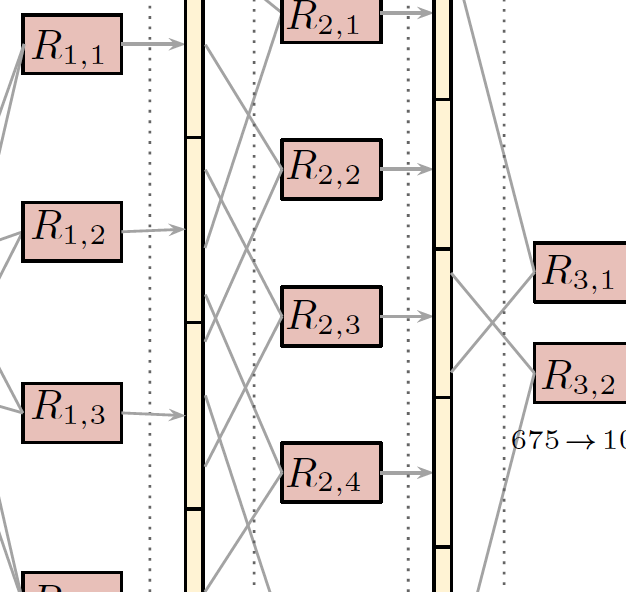

Recent Work

Predefined Sparseness
in recurrent sequence models
CoNLL 2018
Proposes models with predefined sparseness in embeddings and recurrent layers.

DeepProbLog:
Neural Probabilistic Logic Programming
(under review for NIPS 2018)
Presents techniques for combining neural networks and probabilistic logic programs.

Explaining Character-Aware Neural Networks
for Word-Level Prediction:
Do They Discover Linguistic Rules?
(under review for EMNLP 2018)
Introduces Contextual Decomposition for CNNs and investigates how BiLSTM/CNN models capture morphological rules.